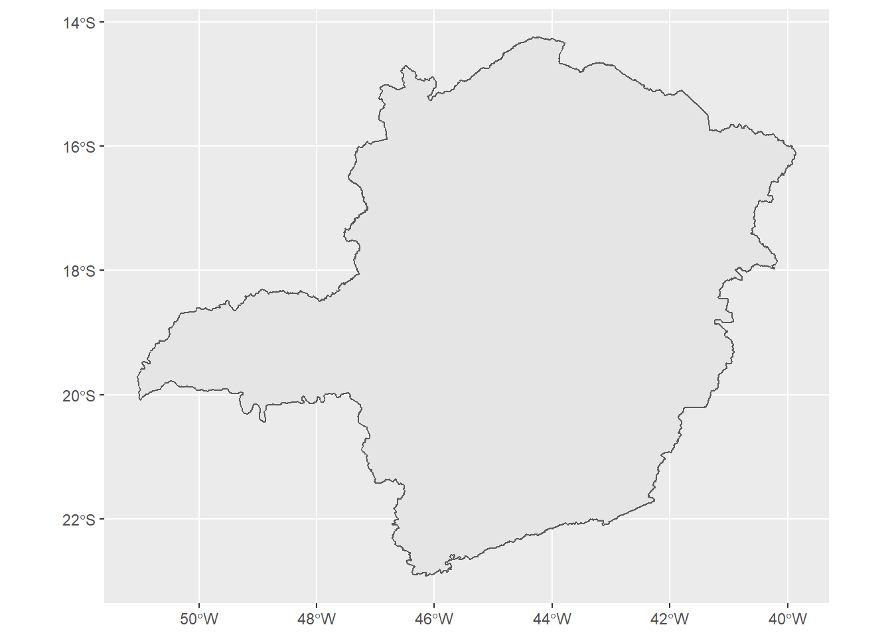

Mapas com geobr e ggplot2
The following content was prepared as a part of an assignment for the PEA-504 - Estágio em Docência (“Internship in Teaching”) course and presented to undergrad students enrolled in the GAM114 - Modelagem de Processos Ambientais (“Environmental Process Modeling”) course.
The assignment prepared and shared below aims to introduce the ggplot2 package to the students as a way of plotting simple maps in R. For that we use three packages, as described below:
- ggplot2;
- geobr: a package that provides spatial data sets of the Brazilian territory;
- ggspatial: for plotting basic map items.
Loading the packages
library(geobr)
library(ggplot2)
library(ggspatial)Loading data points
As we’re plotting the location of air quality monitoring stations, we need to load the data that contains their coordinates. These stations are located in the Espírito Santo state capital, Vitória.
Stations <- read.csv2(
file = "Arquivos/Maps/Coordenadas SIRGAS 2000 Completo.csv",
fileEncoding = "UTF-8")| Station | lat | long |
|---|---|---|
| Laranjeiras | -20.19623 | -40.24517 |
| Carapina | -20.23223 | -40.25488 |
| Jardim Camburi | -20.25507 | -40.26963 |
| Enseada do Suá | -20.31335 | -40.29071 |
| Vitória Centro | -20.32060 | -40.33293 |
| Vila Velha IBES | -20.34867 | -40.31741 |
| Vila Velha Centro | -20.33709 | -40.29022 |
| Cariacica Vila Capixaba | -20.34198 | -40.40201 |
| Cidade Continental | -20.22093 | -40.23311 |
You can obtain this file here.
The geobr package
As stated before, this package is useful to download spatial data sets for the Brazilian country.
The list_geobr() function
This useful function returns the relation between the packages’ function, what it returns, the years of available data and the source.
list_geobr <- list_geobr()
knitr::kable(head(list_geobr))| function | geography | years | source |
|---|---|---|---|
read_country |
Country | 1872, 1900, 1911, 1920, 1933, 1940, 1950, 1960, 1970, 1980, 1991, 2000, 2001, 2010, 2013, 2014, 2015, 2016, 2017, 2018, 2019, 2020 | IBGE |
read_region |
Region | 2000, 2001, 2010, 2013, 2014, 2015, 2016, 2017, 2018, 2019, 2020 | IBGE |
read_state |
States | 1872, 1900, 1911, 1920, 1933, 1940, 1950, 1960, 1970, 1980, 1991, 2000, 2001, 2010, 2013, 2014, 2015, 2016, 2017, 2018, 2019, 2020 | IBGE |
read_meso_region |
Meso region | 2000, 2001, 2010, 2013, 2014, 2015, 2016, 2017, 2018, 2019, 2020 | IBGE |
read_micro_region |
Micro region | 2000, 2001, 2010, 2013, 2014, 2015, 2016, 2017, 2018, 2019, 2020 | IBGE |
read_intermediate_region |
Intermediate region | 2017, 2019, 2020 | IBGE |
The lookup_muni() function
This useful one helps us track the city’s ID
(code_muni). Let’s search for Lavras’ ID:
lookup_muni(name_muni = "LAVRAS")Using year 2010Returning results for municipality Lavras code_muni name_muni code_state name_state abbrev_state code_micro
2680 3138203 Lavras 31 Minas Gerais MG 31057
name_micro code_meso name_meso code_immediate name_immediate
2680 Lavras 3111 Campo das Vertentes 310043 Lavras
code_intermediate name_intermediate
2680 3108 VarginhaDownloading the geobr data sets
Country data set
Every time you download a geobr data set is useful to plot it to assess if it’s the desired one.
Brazil <- read_country(year = 2020, showProgress = FALSE)Using year 2020ggplot() + geom_sf(data = Brazil)
As we can see, the upper code returned all the 26 states and the
Federal District. But sometimes all you desire is the country’s contour
lines…
Brazil.contour <- read_country(year = 2010, showProgress = FALSE)Using year 2010ggplot() + geom_sf(data = Brazil.contour)
To achieve the desired result the solution is changing the
year argument.
By the way, the first result could be achieved by the following code:
Brazil.states <- read_state(code_state = "all", year = 2020, showProgress = FALSE)Using year 2020ggplot() + geom_sf(data = Brazil.states)
State data set
When it comes to state spatial data the go-to function is
read_state().
MG <- read_state(code_state = 31, showProgress = FALSE)Using year 2010ggplot() + geom_sf(data = MG)
This function just obtains a subset of
read_country()’s output. So, to obtain all the
municipalities, head over to read_municipality() just
assigning the state code as the municipality code:
MG.mun <- read_municipality(code_muni = 31, showProgress = FALSE)Using year 2010ggplot() + geom_sf(data = MG.mun)
So, how can I figure out the state codes? Well, I’ve plotted out a map just for you!
ggplot(data = Brazil) + geom_sf() + geom_sf_text(aes(label = code_state)) + labs(x = "",y = "")Warning in st_point_on_surface.sfc(sf::st_zm(x)): st_point_on_surface may not
give correct results for longitude/latitude data
The above code shows how the geom_sf_text() plots
tags in maps. Below you can see the possibilities in the
Brazil sf object.
Note that the geom column stores the geometries and
how they should be plotted. This column has sfc_MULTIPOLYGON, sfc class.
You can find more information about this type of data here.
Maping the air quality stations location
The Base plot
These stations are located in four cities: Vitória, Cariacica, Vila Velha and Serra. We need to download them and add them in one object, as done below:
Vitoria <- read_municipality(code_muni = 3205309,showProgress = FALSE)
Serra <- read_municipality(code_muni = 3205002,showProgress = FALSE)
Cariacica <- read_municipality(code_muni = 3201308,showProgress = FALSE)
VilaVelha <- read_municipality(code_muni = 3205200,showProgress = FALSE)
RMV <- rbind(Vitoria,Serra,Cariacica,VilaVelha)The code_muni value was obtained through the
lookup_muni function. Please refer back to this
page if you want to understand how to do so.
Let’s view our RMV object content:
knitr::kable(RMV)| code_muni | name_muni | code_state | abbrev_state | geom | |
|---|---|---|---|---|---|
| 78 | 3205309 | Vitória | 32 | ES | MULTIPOLYGON (((-28.84323 -… |
| 70 | 3205002 | Serra | 32 | ES | MULTIPOLYGON (((-40.19019 -… |
| 17 | 3201308 | Cariacica | 32 | ES | MULTIPOLYGON (((-40.35609 -… |
| 77 | 3205200 | Vila Velha | 32 | ES | MULTIPOLYGON (((-40.26912 -… |
ggplot() + geom_sf(data = RMV)
It seems we encountered an error with out plot, but we did not. What happens is that Vitória contains islands attached to its territory. If we want to plot only the continental portion, we can restrain the x-axis width.
ggplot() + geom_sf(data = RMV) + coord_sf(xlim=c(-40.61,-40.18))
Now that our base plot is built, we can add another layers, the stations and make the plot more personalized.
Adding a urban area layer
We can obtain it through the geobr package, see the code below:
AreaUrbana <- read_urban_area(showProgress = FALSE)Using year 2015VitoriaAU <- subset(AreaUrbana,
AreaUrbana$code_muni==3205309)
ggplot() +
geom_sf(data = VitoriaAU,fill = "lightblue") +
geom_sf(data = RMV, fill = "transparent") +
coord_sf(xlim=c(-40.61,-40.18))
We can tweak the map by adding the fillargument inside
the geom_sf function so the sf objects can be
distinguished. The colorargument changes the line colour,
that’s not what we want to do here.
Time to plot the stations
The ggplot2 package allows us to build the plots in layers, so the
code above will be stored as base.plot and we’ll add the
layers in the codes.
base.plot <- ggplot() +
geom_sf(data = VitoriaAU,fill = "lightblue") +
geom_sf(data = RMV, fill = "transparent") +
coord_sf(xlim=c(-40.61,-40.18))
Now we can add the points using the
geom_pointfunction.
base.plot2 <- base.plot + geom_point(data = Stations,
aes(x = long,
y = lat,
col = Station)) +
geom_sf_text(data = RMV,
aes(label = name_muni)) +
ylim(c(-20.52,-20))
base.plot
In the code above we added the points by using the
Stations object created above by plotting the longitude on the
x-axis and latitude in the y-axis. The colargument allows
the points do be coloured by the name of each station - note that the
legend is automatically made. The other two layers provide the plotting
of each city’s name by assigning the name_muni vector on
the label argument, and the controlling of the y-axis
length by the ylim function.
There are some tweaks left to be done. We need to change the plot background, the axis titles, the legend title, add a legend for the urban area, add the North arrow and scale bar.
Adding the North arrow and the scale bar
The North arrow is provided by the ggspatial package,
alongside with the scale bar. The theme_* function provide
different styling to the plot. I decided to locate the North arrow by
the top left - tl portion of the map, while the scale bar
is located on the bottom right - br portion.
base.plot2 + theme_minimal() +
annotation_north_arrow(
style = north_arrow_fancy_orienteering,
location = "tl") +
annotation_scale(location = "br") +
labs(x = "", y = "")Warning in st_point_on_surface.sfc(sf::st_zm(x)): st_point_on_surface may not
give correct results for longitude/latitude data
This code was last compiled at 2023-03-17 12:06:48
© 2022 Arthur Boari. All rights reserved.